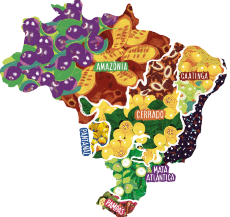
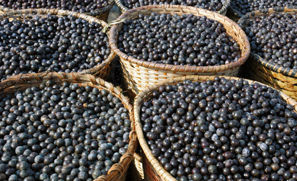
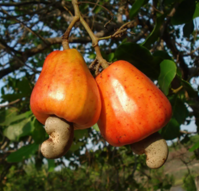
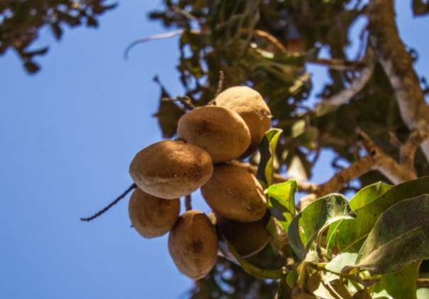
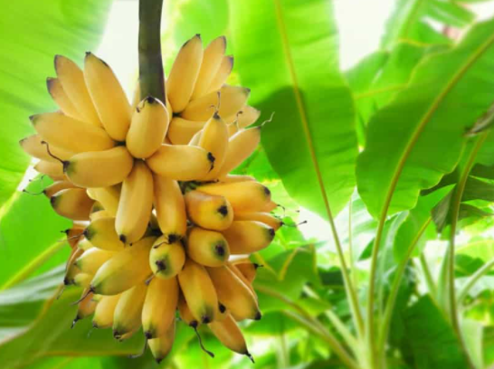

As frutas são um dos bens mais incríveis da natureza,e sem dúvida uma delícia!
Acompanhe agora tudo sobre cada fruta,seu estado ou país de melhor produção
O Brasil é conhecido como a “terra das frutas” graças a tamanha variedade encontrada.
Abaixo, as frutas do mapa e sua origem.
- abacate – América Central.
- abacaxi – Brasil – nativa do cerrado.
- banana – Sudeste Asiático.
- caqui – Ásia.
- coco-da-baía – origem polêmica.
- figo – Ásia.
- goiaba – Brasil.
- laranja – Ásia.
saiba mais sobre o Brasil e suas principais frutas .AQUI

Acompanhe as frutas de cada região de dentro do Brasil
REGIÃO NORTE
Em agosto, no Norte, começa a época do açaí. O fruto de uma palmeira amazônica caiu no gosto dos brasileiros de todas as regiões do Brasil e fez fama até em outros países por suas propriedades energéticas e antioxidantes.

VEJA OUTRAS FRUTAS TÍPICAS
cajá
mangaba
bacuri
maracujá
melancia
melão
REGIÃO NORDESTE
Fruta regional e nativa que entra está na safra no Nordeste em agosto, o caju fornece a castanha

acerola
ciriguela
manga
melancia
melão
REGIÃO CENTRO OESTE
No Centro-Oeste, o destaque vai para o baru, fruto da estação que nasce em uma árvore do Cerrado. Do baru é aproveitada uma amêndoa rica em nutrientes antioxidantes, isto é, previne o envelhecimento celular precoce,que é consumida torrada, geralmente como um petisco

VEJA OUTRAS FRUTAS QUE ESTÃO NESSA REGIÃO
catolé
grão-de-galo
coco-indaiá
loteira
macaíba
xixá.
REGIÃO SUDESTE E SUL
A popular banana está na sua melhor época em agosto no Sudeste. Rica em fibras, vitaminas e minerais, é uma fruta com diversas funcionalidades atribuídas: ajuda a evitar câimbras, a controlar a fome e a melhorar o humor

OUTRAS FRUTAS DESSAS REGIÕES
atemoia
banana
caju
carambola
kiwi
sapucaia
morango
Frutas mais raras do Brasil
| fruta |
local mais comum |
Em outros países |
| Cherimoia |
No Brasil, ela é pouco cultivada, sendo mais comum na Serra da Mantiqueira, em São Paulo. |
É produzida em países da América do Sul com mais de 1.500 metros de altitude, como a Colômbia, Peru e Bolívia. |
| Granadilha |
Em Santa catarina é bem raro mas se vê essa fruta por lá |
Seu plantio é comum na Colômbia |
| Lichia |
a lichia é mais facilmente encontrada no Brasil, sendo produzida em São Paulo, Minas Gerais, Bahia e Paraná. |
Originária do sul da China |
conheça um pouco sobre frutas na antiguidade
CLIQUE AQUI PARA CONHECER!
CLIQUE AQUI PARA CONHECER OS POSICIONAMENTOS!